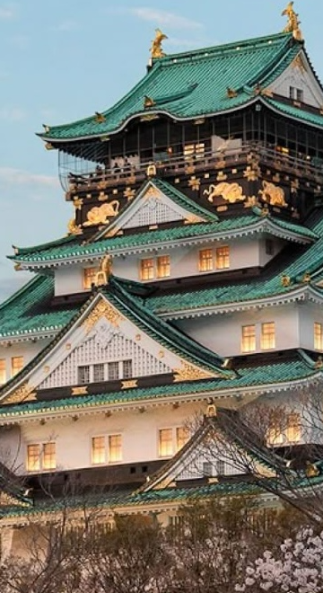

History: From Emperors to Ninjas: Japan’s History Japan boasts a long and fascinating history spanning thousands of years. While influenced by cultures from China and the Korean Peninsula, Japan has also cultivated its own unique traditions. Japan's unique political system and the Imperial House were established approximately 2,300 years ago. In Japan, the accession of a new *Tenno* (Emperor) marks the beginning of a new era name (*gengo*). These era names denote specific periods and are used alongside the Western calendar. For example, the "Heisei" era began in 1989 and transitioned to "Reiwa" in 2019. The current era is "Reiwa."
Samurai were individuals in historical Japan primarily responsible for combat. They served a lord and were known for fighting with swords; in a sense, they were the Japanese equivalent of Western knights. Ninja Ninja were individuals tasked with gathering intelligence on the enemy and infiltrating enemy territory. They employed techniques such as disguise and stealth. While often depicted in modern movies and anime as possessing superhuman abilities, actual ninja primarily engaged in activities like intelligence gathering. In some regions of Japan, "Ninja Certification Tests" are still held today. If you pass the written and *shuriken* (throwing star) tests, you can become a certified ninja! One more thing to note: samurai and ninja are not the same. While the samurai's primary role was combat, ninja specialized in intelligence gathering, infiltration, and other covert operations. *Tenno (Emperor)... The Emperor is a figure who symbolizes the nation of Japan.The Constitution of Japan defines the Emperor as "the symbol of the State and of the unity of the People." Although the Emperor holds no authority to determine politics or laws, he performs acts of state as prescribed by law. This differs significantly from emperors in other countries...